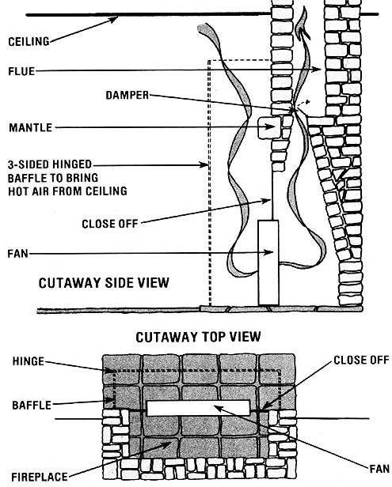

Even during the summer dog days, the temperature-in most sections of North America tends to drop as the sun goes down . . . and can become downright temperate 'round about midnight. Unfortunately, no matter how cool the outdoors might be, many homes stay pretty clanged warm inside (and anyone who's ever tried to sleep in a sweltering bedroom knows just how uncomfortable a healthy human being can be).
Of course, if you're bucks up, you can alleviate the problem with an attic fan . . . a device that moves stagnant air out and, while doing so, draws night-tempered outer air indoors. The installation of such an appliance can be an expensive proposition, though, and will necessarily leave you with a poorly insulated spot in the ceiling where the fan's opening was made.
However, there's a way to get the advantages of an attic fan without the loss of weatherproofing or the expense. All you have to do is purchase an inexpensive square "window" fan. Then open the damper on your fireplace . . . position the fan in the opening (facing in ) . . . close off the remaining portions of the fireplace's mouth (using anything on hand, such as scraps of cardboard or particle board and plastic foam) . . . and-to really go first class-make a three sided, hinged wooden baffle, to limit the fan's draw to the especially warm air near the ceiling.
Once the equipment is all assembled, simply switch on the fan (make sure, first, that you don't have an upstairs fireplace or woodstove on the same flue . . . or you're apt to fill the upper room with soot!) and enjoy the benefits of a costly attic exhaust without the attendant expense! You'll be amazed at how much brighter your summer days will seem when they follow evenings of cool, restful sleep!
|
 |
|
|